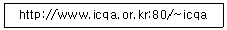
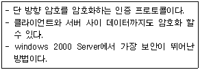
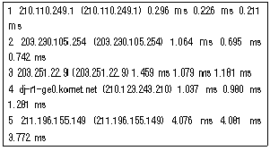
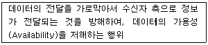
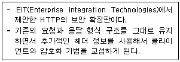

네트워크관리사-1급 (2009-04-05 기출문제)
1과목: TCP/IP
1. B Class의 호스트 ID에 사용 가능한 Address 개수는?
- 116,777,224개
- 65,534개
- 254개
- 126개
(정답률: 80%)

2. Windows 2000 Server에서 호스트의 TCP/IP 설정을 확인하는데 사용되며, 인터페이스가 패킷 수신을 대기 중인지 혹은 동작중인지의 여부와, 현재 물리적 인터페이스에 할당된 인터넷 주소 같은 정보를 판단하기 위해 사용하는 명령어는?
- ipconfig
- ping
- traceroute
- nslookup
(정답률: 80%)
3. TCP/IP에 대한 설명으로 옳지 않은 것은?
- TCP는 데이터링크계층(Data Link Layer) 프로토콜이다.
- IP는 네트워크계층(Network layer) 프로토콜이다.
- TCP는 전송 및 에러검출을 담당한다.
- Telnet과 FTP는 모두 TCP/IP 프로토콜이다.
(정답률: 90%)
4. 서브넷 마스크(Subnetmask)에 대한 설명으로 올바른 것은?
- IP Address에서 네트워크 Address와 호스트 Address를 구분하는 기능을 수행한다.
- 여러 개의 네트워크 Address를 하나의 Address로 통합한다.
- Address는 효율적으로 관리하나 트래픽 관리 및 제어가 어렵다.
- 불필요한 Broadcasting Message는 제한 할 수 없다.
(정답률: 알수없음)
5. 네트워크 ID와 호스트 ID를 할당할 때 적용되는 규칙으로 옳지 않은 것은?
- 같은 네트워크 구획상의 호스트는 똑같은 네트워크 ID를 갖는다.
- 네트워크 구획상의 각 호스트는 유일한 호스트 IP Address를 갖는다.
- 네트워크 ID가 ‘127’로 시작하는 주소는 공인 IP Address로 할당 받을 수 없다.
- 네트워크 ID의 비트(bit)가 모두 ‘1’일 때는 지역 네트워크(Local Network)를 의미한다.
(정답률: 알수없음)
6. 라우터를 경유하여 다른 네트워크로 갈 수 있는 프로토콜은?
- NetBIOS
- NetBEUI
- IPX
- TCP/IP
(정답률: 알수없음)
7. 차세대 인터넷 주소(IPNG 또는 IPv6)의 필요성이라고 볼 수 없는 것은?
- 가용 주소의 확대
- QoS, 즉 서비스질 향상
- 전송방식 개선
- HTML의 표준화
(정답률: 알수없음)
8. IPv6에 대한 설명으로 옳지 않은 것은?
- 현재 IPv4를 대체할 수 있다.
- 1992년에 제안되어, 1995년에 관심의 대상이 되었다.
- IPv4에서 쉽게 전이 할 수 있도록 설계되었다.
- 32bit 주소 공간을 가진다.
(정답률: 알수없음)
9. IP Address를 알고 MAC Address를 모를 경우 데이터 전송을 위해 MAC Address를 알아내는 프로토콜은?
- ARP
- RARP
- ICMP
- IP
(정답률: 알수없음)
10. RARP에 대한 설명 중 올바른 것은?
- 시작지 호스트에서 여러 목적지 호스트로 데이터를 전송할 때 사용된다.
- TCP/IP 프로토콜의 IP에서 접속없이 데이터의 전송을 수행하는 기능을 규정한다.
- 하드웨어 주소를 IP Address로 변환하기 위해서 사용한다.
- IP에서의 오류제어를 위하여 사용되며, 시작지 호스트의 라우팅 실패를 보고한다.
(정답률: 알수없음)
11. 망 내 교환 장비들이 오류 상황에 대한 보고를 할 수 있게 하고, 예상하지 못한 상황이 발생한 경우 이를 알릴 수 있도록 지원하는 프로토콜은?
- ARP
- RARP
- ICMP
- RIP
(정답률: 알수없음)
12. IP에서 발생하는 오류를 처리하기 위한 프로토콜은?
- PPP
- SLIP
- TCP
- ICMP
(정답률: 알수없음)
13. Telnet에 대한 설명 중 옳지 않은 것은?
- 원격접속을 하기 위한 프로토콜이다.
- 호스트 컴퓨터에 자신이 이용할 수 있는 계정(ID)이 있어야 한다.
- 포트번호는 23번을 사용한다.
- 데이터가 암호화 처리되어 전송된다.
(정답률: 알수없음)
14. TCP/IP 응용 모듈 프로토콜들 중 하이퍼텍스트 전송을 맡고 있는 것은?
- Telnet
- FTP
- HTTP
- SMTP
(정답률: 알수없음)
15. 아래 내용은 인터넷 익스플로러에 적힌 URL 주소이다. 이 중에서 메소드(Method)에 해당되는 것은?

- http
- www.icqa.or.kr
- 80
- /~icqa
(정답률: 알수없음)
16. SMTP 오브젝트에 대한 설명 중 옳지 않은 것은?
- Path: 마침표와 인자 분할자를 포함하여 최대 길이는 256캐릭터이다.
- Domain: 도메인 이름 또는 번호의 최대 길이는 64캐릭터이다.
- User: 사용자 이름의 최대 길이는 128캐릭터 이다.
- Reply Line: 응답코드와 [CRLF]를 포함하여 응답라인의 최대 길이는 512캐릭터이다.
(정답률: 알수없음)
2과목: 네트워크 일반
17. TCP/IP 망을 기반으로 하는 다양한 호스트 간 네트워크 상태 정보를 전달하여 네트워크를 관리하는 표준 프로토콜은?
- FTP
- ICMP
- SNMP
- SMTP
(정답률: 알수없음)
18. PCM 방식에서 아날로그 신호의 디지털 신호 생성 과정으로 올바른 것은?
- 아날로그신호-표본화-부호화-양자화-디지털신호
- 아날로그신호-표본화-양자화-부호화-디지털신호
- 아날로그신호-양자화-표본화-부호화-디지털신호
- 아날로그신호-양자화-부호화-표본화-디지털신호
(정답률: 알수없음)
19. 전송한 프레임의 순서에 관계 없이 단지 손실된 프레임만을 재전송하는 방식은?
- 선택적 제거 ARQ
- Stop-and-wait ARQ
- Go-back-N ARQ
- Adaptive ARQ
(정답률: 알수없음)
20. 데이터 전송 운영 방법에서 수신측에 n개의 데이터 블록을 수신할 수 있는 버퍼 저장 공간을 확보하고, 송신측은 확인신호 없이 n개의 데이터 블록을 전송하며, 수신측은 버퍼가 찬 경우 제어정보를 송신측에 보내서 송신을 일시 정지시키는 흐름제어는?
- 블록
- 모듈러
- Xon/Xoff
- window
(정답률: 알수없음)
21. 코드 분할 다중화에 관한 설명 중 옳지 않은 것은?
- 스펙트럼 확산 방식을 사용한다.
- 동일한 주파수 대역을 사용할 수 있다.
- 주파수 이용 효율이 높다.
- 서로 같은 코드를 사용하여 통신하기 때문에 통신보안이 우수하다.
(정답률: 알수없음)
22. 데이터 링크 계층의 프로토콜이다. 이들 중 비트 방식의 프로토콜로 옳지 않은 것은?
- HDLC
- SDLC
- ADCCP
- BSC
(정답률: 알수없음)
23. VDSL에 대한 설명으로 옳지 않은 것은?
- 최대전송거리는 300m~1500m정도임.
- 하향속도는 13~52Mbps정도임.
- 상향속도는 1.6~13Mbps정도임
- DMT 및 CAP변복조방식을 사용함.
(정답률: 알수없음)
24. 반대 방향으로 동작하는 주링과 부링의 이중 링과 ,링에 연결되는 스테이션들로 구성되며, 기본적인 전송매체는 광케이블이다. 계층구조는 MAC 계층과 물리계층, 그리고 이 두개의 계층을 관리하는 SMT(Station Management)로 구성되는 고속 통신 프로토콜에 해당되는 것은?
- FDDI(Fiber Distributed Data Interface)
- DQDB(Distributed Queue Dual Bus)
- SMDS(Switched Multimegabit Data Service)
- Frame Relay
(정답률: 알수없음)
25. ATM에 대한 설명 중 잘못된 것은?
- 데이터를 53Byte의 셀 또는 패킷으로 나눈다.
- 소프트웨어보다는 하드웨어로 더 쉽게 구현되도록 설계되었다.
- 동기식 전송 모드를 사용한다.
- B-ISDN(광대역 종합정보통신망)의 핵심 기술 중 하나이다.
(정답률: 알수없음)
26. 155Mbps 정도의 대역폭을 지원하며 동시에 음성, 비디오, 데이터 통신을 무리 없이 지원하기 위한 가장 좋은 방법은?
- Frame Relay
- T1
- ATM
- X.25
(정답률: 알수없음)
27. 무선 통신에서 가장 널리 사용되는 방식으로 코드에 의해 구분된 여러 개의 단말기가 동일한 주파수 대역을 사용하며, 채널로 보다 많은 통신 노드를 수용할 수 있는 무선 전송 방식은?
- CDMA
- TDMA
- CSMA/CD
- FDMA
(정답률: 알수없음)
3과목: NOS
28. 하나의 시스템에서 FTP 서버와 웹서버를 운영할 경우, [관리도구] - [DNS]에서 해당 도메인의 팝업 메뉴 중 어떤 것을 선택하는가?
- 새 호스트(S)
- 새 별칭(A)
- 새 위임(G)
- 다른 새 레코드(C)
(정답률: 알수없음)
29. windows 2000 Server에서 “C:\Inetpub\ftproot”를 FTP 서버의 기본 디렉터리로 사용하였는데 용량이 부족하여 하드디스크를 증설하면서 추가된 하드디스크의 디렉터리를 “C:\Inetpub\ftproot\data2”로 하고 싶을 때 가장 적당한 방법은?
- 가상 FTP 디렉터리를 사용한다.
- Active Directory를 사용한다.
- 공유 디렉터리를 사용한다.
- 삼바를 사용한다.
(정답률: 알수없음)
30. E-Mail에서 주로 사용하는 프로토콜로 옳지 않은 것은?
- SMTP
- POP3
- IMAP
- SNMP
(정답률: 알수없음)
31. windows 2000 Server의 사용자 계정에 대한 설명으로 옳지 않은 것은?
- 도메인 사용자 계정은 해당 도메인에 로그온 하면 네트워크내의 모든 컴퓨터에 접근 할 수 있다.
- 로컬 사용자 계정은 해당 컴퓨터에만 접근 할 수 있다.
- Guest 계정을 사용하여 도메인 사용자 계정을 만들 수 있다.
- 도메인에서 사용하는 사용자 계정은 디렉터리 전체에서 유일해야 한다.
(정답률: 알수없음)
32. windows 2000 Server에서 사용하는 NTFS에 대한 설명으로 올바른 것은?
- 파일크기에 제한이 있다.
- NTFS시스템에서 FAT파일 시스템으로 바꾸려면 다시 포맷해야 한다.
- 설계 시 최대 10MB 파티션 크기의 FAT로 수동 포맷한다.
- 파일 저장 수에 대한 제한이 있다.
(정답률: 알수없음)
33. windows 2000 Server 사용 시에 라우팅 및 원격 액세스 보안 관리를 위한 4가지 인증 프로토콜들이 있다. 다음 설명은 어떤 인증 프로토콜에 대한 것인가?

- PAP
- SPAP
- CHAP
- MS-CHAP
(정답률: 37%)
34. windows 2000 Server의 Active Directory를 사용할 때 도메인 컨트롤러(서버) 사이에서 복제되는 디렉터리 데이터의 범주에 속하지 않는 것은?
- Domain Data
- Configuration Data
- Schema Data
- User Data
(정답률: 알수없음)
35. 다음 중 windows 2000 Server에서 동적 디스크의 특징으로 옳지 않은 것은?
- 디스크에 대한 모든 구성 정보가 디스크에 저장된다.
- 디스크의 설정 정보가 그 디스크 자체에 저장된다.
- 볼륨이 연속되지 않은 디스크 영역으로 확장이 가능하다.
- 기본 파티션과 확장 파티션으로 나뉜다.
(정답률: 알수없음)
36. Linux에서 사용되어 지는 두 가지 데스크톱 환경은?
- KDE, GNU
- KDE, GNOME
- GNU, GNOME
- GNU, GRAP
(정답률: 알수없음)
37. 운영체제의 종류로 옳지 않은 것은?
- Linux
- UNIX
- windows 2003
- www
(정답률: 알수없음)
38. Linux에서 "rpm -ivh foobar-1.1-2.i386.rpm" 명령어가 가지는 의미는?
- 패키지를 설치만 할 때 사용하는 명령어
- 패키지를 정보와 함께 설치 할 때 사용하는 명령어
- 패키지를 업그레이드 할 때 사용하는 명령어
- 패키지를 정보와 함께 업그레이드 할 때 사용하는 명령어
(정답률: 알수없음)
39. 아래 내용은 Linux의 어떤 명령을 사용한 결과인가?

- Ping
- Nslookup
- Traceroute
- Route
(정답률: 알수없음)
40. SQL 자체 계정 정책을 이용하여 접근을 통제하며, ‘sa'라는 데이터베이스 관리자에 대한 암호를 지정하는 인증 모드는?
- windows 인증 모드
- 사용자 인증 모드
- 혼합 모드
- Server 인증 모드
(정답률: 0%)
41. windows 2000 Server의 "네트워크 모니터" 도구로 캡처한 패킷에 대해 할 수 없는 것은?
- 특정 프로토콜을 필터링 한다.
- 특정 주소를 필터링 한다.
- 특정 데이터 패턴을 필터링 한다.
- 특정 시간대를 필터링 한다.
(정답률: 알수없음)
42. 도메인에 대한 Zone은 관리하지 않고 오직 도메인 주소를 IP Address로 변환하는 역할만 하는 서버는?
- 1차 네임 서버
- 2차 네임 서버
- 캐시 서버
- 웹 서버
(정답률: 알수없음)
43. 삼바(Samba)에 관한 설명 중 m옳지 않은 것은?
- Linux와 이기종간의 파일 시스템이나 프린터를 공유하기 위해 설치하는 서버 및 클라이언트 프로그램이다.
- 삼바에 대한 정보와 다운로드는 'http://www.samba.org'에서 얻을 수 있다.
- 삼바의 실행은 '$/etc/rc.d/smb start' 로 한다.
- 삼바의 종료는 '$/etc/rc.d/smb exit' 로 한다.
(정답률: 알수없음)
44. 메일을 주고받기 위해 정해진 규칙과 형식이 있다. 이에 대한 설명으로 옳지 않은 것은?
- 메일에 대한 규칙으로 SMTP가 있고, 보조 규칙으로 MIME과 IMAP, POP3가 있다.
- SMTP는 7bit 텍스트를 메일 서버 간에 서로 주고받기 위한 규칙이다.
- IMAP와 POP3는 메일 서버에 질의하여 메일을 확인하는 규칙이다.
- MIME는 16bit 문자를 송수신하기 위하여 나온 규칙이다.
(정답률: 알수없음)
45. Linux 시스템에 네트워크 설정과 관련 없는 파일은?
- /etc/sysconfig/network
- /etc/motd
- /etc/resolv.conf
- /etc/sysconfig/network-scripts/ifcfg-eth0
(정답률: 알수없음)
4과목: 네트워크 운용기기
46. RAID에 대한 설명이 옳지 않은 것은?
- RAID level 2 : 어레이 안의 모든 드라이브에 비트 수준으로 자료 나누기를 제공한다. 추가 드라이브는 해밍 코드를 저장한다. 미러된 드라이브는 필요 없다.
- RAID level 3 : 기본적으로 RAID 1+2이다. 이는 다수의 RAID 1 한 쌍에 걸쳐 적용된 것이다. 패리티 정보는 생성되고 단일 패리티 디스크에 작성된다.
- RAID level 4 : 데이터가 비트나 바이트보다는 디스크 섹터 단위로 나눠지는 것만 제외하면 RAID level 3과 비슷하다. 패리티 정보도 생성된다.
- RAID level 5 : 데이터는 드라이브 어레이의 모든 드라이브에 디스크 섹터 단위로 작성된다. 에러-수정 코드도 모든 드라이브에 작성된다.
(정답률: 알수없음)
47. 네트워크 회선 운용기기 중 라우터의 기능으로 옳지 않은 것은?
- MAC어드레스를 이용해 목적지까지 사용자 데이터를 전송한다.
- 네트워크 계층에서 작동하는 장비이다.
- 망내의 혼잡상태를 제어할 수 있다.
- LAN과 wAN에서 함께 쓰이는 인터네트워킹 장비이다.
(정답률: 알수없음)
48. Serial Interface 에서 PPP를 캡슐화(Encapsulation)하기 위한 방법은?
- Router(config)#encap ppp
- Router(config-if)#ppp
- Router(config-if)#encap ppp
- Router(config-if)#ppp encapsulation
(정답률: 알수없음)
49. Cisco 2501 Router에서 구성파일(Configuration files)이 저장되어 있는 장소로 전원이 차단되더라도 구성 파일을 항상 유지하고 있는 곳은?
- ROM
- RAM
- Flash ROM
- NVRAM
(정답률: 알수없음)
50. 전송방식별 전송매체에 대한 분류 중 잘못 연결된 것은?
- 10Base5 - 동축 Thick 케이블
- 10Base2 - 동축 Thin 케이블
- 10BaseT - Fiber Optic 케이블
- 100BaseTX - UTP 케이블
(정답률: 알수없음)
5과목: 정보보호개론
51. 보안의 4대 요소로 옳지 않은 것은?
- 기밀성(Confidentiality)
- 무결성(Integrity)
- 복잡성(Complexity)
- 인증성(Authentication)
(정답률: 알수없음)
52. 인터넷에 침입하는 형태 중의 한 가지에 대한 설명이다. 무엇에 해당하는가?

- 가로막기(Interruption)
- 가로채기(Interception)
- 수정(Modification)
- 위조(Fabrication)
(정답률: 알수없음)
53. 피싱(Phishing)에 대한 설명으로 가장 옳지 않은 것은?
- 개인 정보(Private Data)와 낚시(Fishing)의 합성어로 해커들이 만든 용어이다.
- 사회 공학적 방법 및 기술적 은닉기법을 이용해서 민감한 개인정보, 금융계정 정보를 절도하는 신종 금융사기 수법이다.
- 최근에는 DNS 하이재킹 등을 이용하여 사용자를 위장 웹사이트로 유인, 개인 정보를 절도하는 피싱의 진화된 형태의 파밍(Pharming)도 출현하였다.
- 개인 정보의 획득을 위해, 은행과 같은 주요 사이트의 서버를 대상으로 피싱이 이루어지고 있다.
(정답률: 알수없음)
54. windows 2000 Server의 보안 감사 정책 설정 시 예상되는 위협으로 볼 수 없는 것은?
- 바이러스 침입
- 파일에 대한 부적절한 접근
- 프린터에 대한 부적절한 접근
- 임의의 하드웨어 장치 설정
(정답률: 알수없음)
55. Windows 2000 Server에서 감사 정책 계획에 의해 감사할 수 없는 이벤트 유형은?
- 사용자 로그온 및 로그오프
- 컴퓨터의 종료 및 재시작
- 네트워크 공격자 침입 시도
- Active Directory 개체의 변경 시도
(정답률: 알수없음)
56. “대칭키 암호 시스템”과 “비대칭키 암호 시스템”의 비교 설명으로 옳지 않은 것은?
- 키의 분배 방법에 있어 대칭키 암호 방식은 비밀스럽게 분배하지만 비대칭키 암호 방식은 공개적으로 한다.
- DES는 대칭키 암호 방식이고 RSA는 비대칭키 암호 방식이다.
- 대칭키 암호 방식은 비대칭키 암호 방식보다 암호화의 속도가 빠르다.
- N명의 사용자가 서로 데이터를 비밀로 교환하려 할 때 대칭키 암호 방식에서 필요한 키의 수는 2N개이고, 비대칭키 암호 방식에서는 "N(N-1)/2"개가 필요하다.
(정답률: 알수없음)
57. 설명하는 것이 나타내는 것은?

- Secure Electronic Transaction
- Security Extension Architecture
- Secure-HTTP
- Secure Socket Layer
(정답률: 알수없음)
58. 시스템에 침투 형태 중 IP Address를 접근 가능한 IP Address로 위장하여 침입하는 방식은?
- Sniffing
- Fabricate
- Modify
- Spoofing
(정답률: 알수없음)
59. 정보보호 표준 용어 중 설명으로 올바른 것은?
- 비대칭형 암호 시스템(Asymmetric Cryptographic System) : 비밀 함수를 정의하는 비밀키와 공개 함수를 정의하는 공개 키들의 쌍
- 데이터 무결성(Data Integrity) : 데이터를 인가되지 않은 방법으로 변경할 수 없도록 보호하는 성질
- 복호(Decipherment) : 시스템 오류 이후에 시스템과 시스템 내의 데이터 파일을 재 저장하는 행위
- 공개키(Public Key) : 정보 시스템을 사용하기 전 또는 정보를 전달할 때, 사용자를 확인하기 위해 부여된 보안 번호
(정답률: 알수없음)
60. 다음 중 암호화 파일 시스템(EFS)에 대한 설명으로 옳지 않은 것은?
- 사용자 및 I/O 과정에서 투명하게 실행된다.
- 동일 파일에 대해서 NTFS 압축 및 암호화는 불가능하다.
- 데이터 암호화 표준 X (DESX) 알고리즘을 사용한다.
- 키를 분실하였을 때, 관리자는 응급으로 키를 복구할 수 있다.
(정답률: 알수없음)